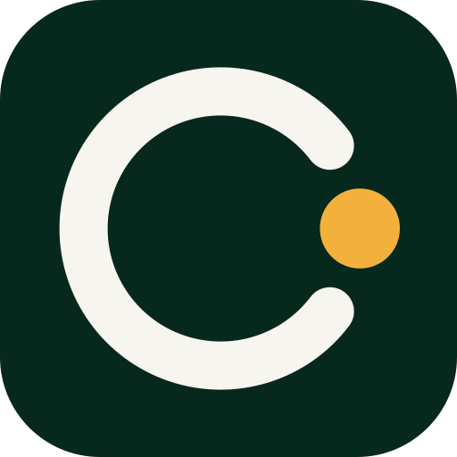

CoreLink Design System v1
Интерфейс, которому верят настолько, что платят
Одна система токенов для админки и клиентских интерфейсов: две темы, одна палитра, один набор компонентов. Витрина и кабинет — тёмная тема, админка — светлая.
01 — Принципы
О чём система
Доверие в этом продукте не рисуется картинками — оно складывается из того, что человек заранее знает, сколько спишут, что будет дальше и куда писать, если сломается.
Цена без сюрпризов
Рядом с ценой всегда период и итоговая сумма. Никаких «от», сносок и звёздочек. Автосписаний нет — говорим об этом прямо у кнопки.
Одно главное действие
На экране одна кнопка cl-btn-cta. Всё остальное —
вторичные и ghost. Два равнозначных призыва снижают конверсию обоих.
Обещание рядом с риском
Гарантия возврата, способы оплаты и «доступ откроется автоматически» стоят в том же экране, что и оплата, а не в футере.
Статус всегда виден
Подписка, срок, трафик, состояние узла — на первом экране, без переходов. Цветом одним ничего не сообщаем: рядом с точкой всегда текст.
Ошибка говорит, что делать
«Платёж не прошёл» — плохо. «Банк отклонил платёж. Попробуйте другую карту или СБП — деньги не списаны» — хорошо.
Спокойный тон
Ни таймеров обратного отсчёта, ни «осталось 2 места». Продукт про безопасность: давление читается как обман.
02 — Решения
Почему система выглядит так
Семь решений, принятых сознательно. Каждое отвечает на вопрос «как это влияет на решение купить», а не «как это модно».
Хвойный, не синий
Синий — цвет по умолчанию у половины сервисов, он не запоминается. Основной цвет
CoreLink — плотный хвойный #16684C: он читается как
«деньги в порядке, доступ работает» и держит контраст 6.7:1 с белым текстом.
Тёплая бумага вместо серого
Нейтральные тона тёплые, кремовые (#F7F5EF), а тёмная тема
построена на тёплом угле (#121110), а не на сине-чёрном.
Тёплый фон снимает «серверную» холодность и продлевает время чтения.
Ноль градиентов
Заливка либо есть, либо её нет. Градиенты и свечения — самый быстрый способ выглядеть как шаблон и как «стартап на неделю». Глубина набирается слоями поверхностей, рамками и воздухом.
Serif в заголовках и ценах
Spectral в заголовках и суммах даёт интонацию договора и редакции. Гротеск в интерфейсе (Manrope) остаётся нейтральным, моно (IBM Plex Mono) маркирует данные: ключи, объёмы, даты.
Янтарь — только выгода
Единственный тёплый акцент отвечает за экономию, срок и маркер в заголовке. Его мало, поэтому он работает: увидев янтарь, человек знает — здесь про деньги в его пользу.
Тёмный блок как «глава»
Плотная хвойная плашка .cl-ink-panel делит витрину на
главы и держит внимание на доказательствах и на рекомендованном тарифе. Именно она, а
не рамка со свечением, показывает «вот этот вариант».
Тени почти нет
В светлой теме карточки держатся рамкой и фоном. Тень появляется только у того, что действительно всплывает над страницей: модалка, меню. Плоскость читается как аккуратность.
03 — Логотип
Знак и лок
Разомкнутое кольцо и узел, замыкающий связь: буква C и соединение одновременно. Кольцо — хвойное, узел — янтарный: «канал есть, он живой». Никаких градиентов и свечений.
Знак
На тёмном и на янтарном знак одноцветный: logo-mark.svg
наследует цвет текста через currentColor.
Версии лока
logo-lockup.svg — основной, на светлом
logo-lockup-dark.svg — на тёмном
logo-lockup-mono.svg — одноцветный: печать, фирменный фон, водяной знак

favicon (32px) и app-icon (512px, аватар бота)
Правила
Можно
- Охранное поле вокруг лока — не меньше высоты знака.
- Минимальный размер: знак 20px, лок 120px по ширине.
- На фото — одноцветная версия на плотной плашке.
- Узел янтарный или в цвет текста — других вариантов нет.
Нельзя
- Градиенты, тени, обводки, наклон и растяжение.
- Ставить знак и слово «CoreLink» рядом вручную — только готовый лок.
- Набирать «CoreLink» гротеском: вордмарк всегда serif.
- Использовать знак как иконку статуса: у статусов свои точки.
04 — Цвет
Палитра
Четыре ряда: хвойный — бренд и «работает», янтарь — выгода и внимание, ржавый — ошибки, бумага — всё остальное. В компонентах используем только семантические роли.
Pine — бренд, действие, «работает»
600 — кнопка в светлой теме (белый текст, 6.7:1). 300 — кнопка в тёмной теме, текст на ней тёмный (8.6:1). 900 — «главы» и рекомендованный тариф.
Amber — выгода, срок, маркер
Янтарь никогда не заливает кнопку действия — иначе он перестаёт означать «выгода».
Rust и Paper
Роли (переключаются вместе с темой)
| Токен | Где применяется | Светлая | Тёмная |
|---|---|---|---|
--cl-bg |
Фон страницы | ||
--cl-surface |
Карточки, таблицы, панели | ||
--cl-primary |
Кнопка действия, активная навигация | ||
--cl-ink |
Плотная «глава», рекомендованный тариф, футер | ||
--cl-accent |
Выгода, маркер, фокус | ||
--cl-text / --cl-text-muted |
Основной и второстепенный текст |
05 — Типографика
Три гарнитуры, три роли
Spectral — заголовки, цены, цитаты. Manrope — весь интерфейсный текст. IBM Plex Mono — данные, статусы, шапки таблиц. В прод шрифты кладём локально, не подключаем со стороннего CDN.
Интернет без границ
.cl-display — Spectral 54/1.1/600
Заголовок раздела
.cl-h1 — Spectral 30/600
Заголовок страницы админки
.cl-h2 — Spectral 23/600
Подзаголовок под главным заголовком: объясняет выгоду одним предложением.
.cl-lede — Manrope 19/1.7, вторичный цвет
Основной текст интерфейса — Manrope 14px, межстрочный 1.55.
body
06 — Тарифы
.cl-eyebrow — IBM Plex Mono 12/uppercase с линейкой
1 490 ₽ · 128.4 ГБ · 12.08.2026
.cl-numeric — IBM Plex Mono, табличные цифры
Доверие — это предсказуемость
.cl-marker — янтарная плашка, одно слово на экран
06 — Сетка
Отступы, радиусы, тени
Шаг сетки — 4px. Радиусы сдержанные: 4–12px, ничего «капсульного», кроме тумблера.
Отступы
--cl-space-1 | 4px | внутри бейджа | |
--cl-space-2 | 8px | иконка и текст | |
--cl-space-3 | 12px | между кнопками | |
--cl-space-5 | 20px | внутри карточки | |
--cl-space-6 | 24px | между карточками | |
--cl-space-16 | 64px | между секциями гайда | |
--cl-space-20 | 80px | секции витрины |
Радиусы и тени
--cl-shadow-sm равен none
намеренно: карточки не «висят». Тень — только у модалок и меню.
07 — Компоненты
Интерфейсные блоки
Один класс — один компонент, модификаторы через суффикс. Состояния —
.is-loading, .is-invalid,
.is-featured, остальное через нативные атрибуты.
Кнопки
Можно
- Текст кнопки — глагол и результат: «Оплатить 1 490 ₽», а не «Далее».
- На мобильном главная кнопка — во всю ширину, высота 44px.
- Во время запроса —
.is-loading, кнопка не пропадает.
Нельзя
- Две
cl-btn-ctaна одном экране. - Заливать кнопку янтарём: он означает выгоду, а не действие.
- Блокировать кнопку без объяснения, чего не хватает.
Поля
Статусы
Сообщения
Карточка и таблица
| Клиент | Тариф | Сумма | Способ | Статус |
|---|---|---|---|---|
| @ivan | Год · безлимит | 1 490 ₽ | СБП | Оплачен |
| @marina | Месяц · 100 ГБ | 249 ₽ | Telegram Stars | Ожидает |
| @pavel | Месяц · 100 ГБ | 249 ₽ | Карта | Отклонён |
Загрузка и пустое состояние
Иконки
24px, обводка 1.5, скруглённые концы, наследуют цвет текста. Файлы —
assets/icons/.
08 — Витрина
Блоки продажи
Пять блоков закрывают путь до оплаты: обещание → доказательства → цена → как подключить → что если не подойдёт. Собранный прототип — storefront.html.
Полоса доверия · .cl-trustbar
Тариф · .cl-plan
- 100 ГБ трафика
- 3 устройства
- Безлимитный трафик
- 5 устройств
- Приоритетная поддержка
Можно
- Показывать цену за месяц и итоговую сумму одновременно.
- Отмечать выгоду в процентах рядом со старой ценой.
- Выделять один тариф — тот, что реально выгоднее клиенту.
Нельзя
- Показывать «старую цену», которой не было.
- Больше трёх тарифов в ряд: выбор парализует.
- Прятать лимиты трафика и устройств под ссылку «подробнее».
Гарантия · .cl-guarantee
Шаги · .cl-steps
09 — Доступность
Контраст
Таблица считается из живых значений токенов при загрузке страницы. Порог AA для обычного текста — 4.5:1.
| Пара | Светлая | Тёмная |
|---|---|---|
| Замер выполняется при загрузке страницы… | ||
Фокус — янтарная обводка 2px с отступом 2px, снимать её нельзя. Минимальная площадь нажатия
на мобильном — 44px (--cl-tap-target).
10 — Подключение
Как использовать
В приложении на Vite или Next
import "@corelink/ui";
Тема
<html lang="ru" data-theme="dark"> — витрина и кабинет. Без атрибута — светлая админка.
Шрифты
Spectral 500/600, Manrope 400/500/600/700, IBM Plex Mono 400/500 — положить в public/fonts и подключить через @font-face с font-display: swap.
Частями
import "@corelink/ui/tokens.css"; import "@corelink/ui/components.css";